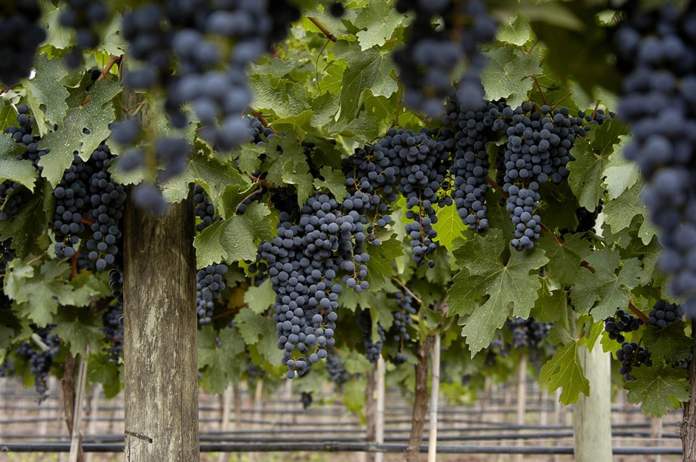
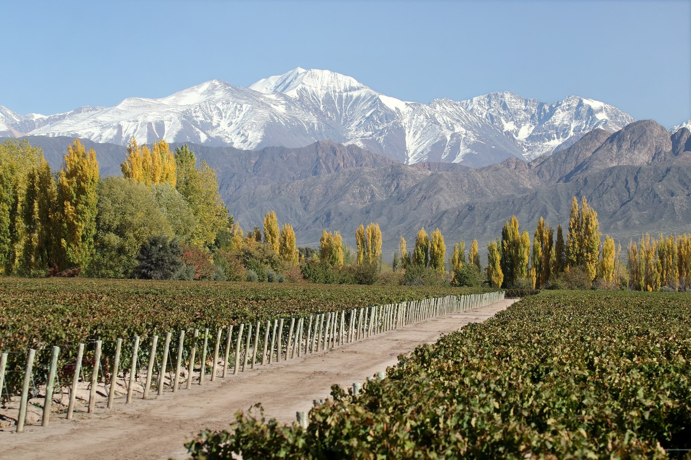
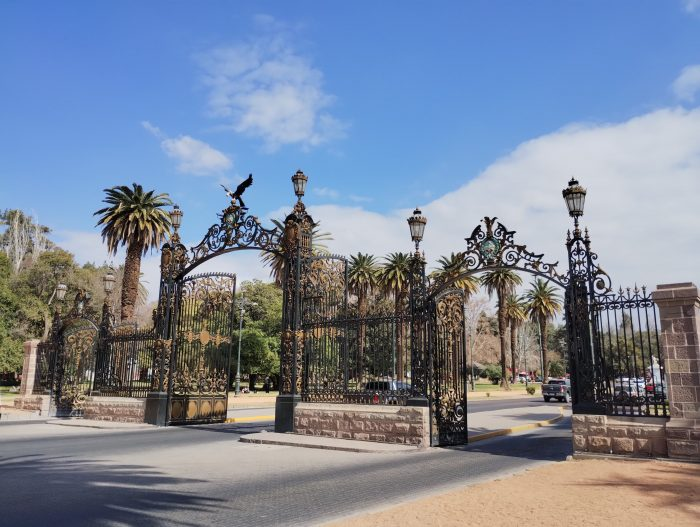
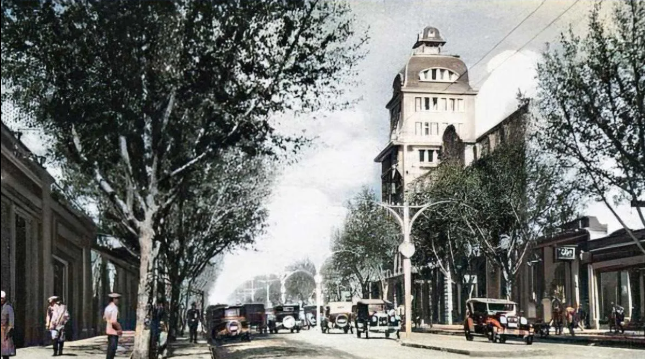

Mendoza limita con Chile. El "Paso Internacional Los Libertadores" une ambos países.
En la montaña viven cóndores, aves que pueden vivir ¡más de 70 años!
El semáforo para ciegos fue inventado por un mendocino, Mario Dávila.